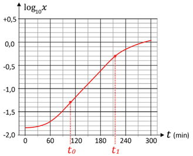

R 1: Domínio da Função Logarítmica
Enunciado: Determine o domínio de $f(x) = \log_3(2x - 6)$.
Resolução: O logaritmando deve ser estritamente positivo: $$2x - 6 > 0 \implies 2x > 6 \implies x > 3$$ Domínio: $D = (3, +\infty)$.
1º Ano | Aula 13: Álgebra (Função Logarítmica)
A função logarítmica $f(x) = \log_a x$ é a inversa da função exponencial $g(x) = a^x$. Seu comportamento — crescente ou decrescente — depende exclusivamente da base $a$.
$$f(x) = \log_a x, \quad a > 0,\ a \neq 1,\ x > 0$$
A função logarítmica de base $a$ é a função $f : (0, +\infty) \to \mathbb{R}$ definida por:
$$f(x) = \log_a x, \quad a > 0,\ a \neq 1$$
O domínio restrito a $(0, +\infty)$ é uma consequência direta da definição de logaritmo: não existe $\log_a 0$ e tampouco $\log_a x$ para $x < 0$ nos reais.
Quando $a > 1$, a função logarítmica é estritamente crescente:
O gráfico tem formato de curva suave que cresce cada vez mais devagar — isso é chamado de crescimento sublinear. Quanto maior a base $a$, mais "deitada" fica a curva.
Pontos marcantes: $(1,\, 0)$ e $(a,\, 1)$ e $\left(a^2,\, 2\right)$.
Quando $0 < a < 1$, a função logarítmica é estritamente decrescente:
O gráfico da base $0 < a < 1$ é o reflexo vertical (em relação ao eixo $x$) do gráfico da base $1/a > 1$. Isso porque $\log_{1/a} x = -\log_a x$.
Ambos os gráficos compartilham o ponto $(1, 0)$ e têm a reta $x = 0$ (eixo $y$) como assíntota vertical.
A função logarítmica $f(x) = \log_a x$ e a função exponencial $g(x) = a^x$ são inversas uma da outra:
$$f(g(x)) = \log_a(a^x) = x \qquad \text{e} \qquad g(f(x)) = a^{\log_a x} = x$$
Geometricamente, os gráficos de $f$ e $g$ são simétricos em relação à reta $y = x$. Para obter um a partir do outro, basta refletir sobre essa reta (trocar $x$ e $y$).
Tabela comparativa:
| Característica | $f(x) = a^x$ | $g(x) = \log_a x$ |
|---|---|---|
| Domínio | $\mathbb{R}$ | $(0, +\infty)$ |
| Imagem | $(0, +\infty)$ | $\mathbb{R}$ |
| Passa por | $(0, 1)$ | $(1, 0)$ |
| Assíntota | $y = 0$ (horizontal) | $x = 0$ (vertical) |
| Monotonia ($a>1$) | Crescente | Crescente |
Para resolver equações do tipo $\log_a f(x) = \log_a g(x)$, utilizamos a bijetividade da função logarítmica: sendo injetiva, dois logaritmos iguais (na mesma base) implicam logaritmandos iguais:
$$\log_a f(x) = \log_a g(x) \iff f(x) = g(x), \quad \text{com } f(x) > 0 \text{ e } g(x) > 0$$
Outros tipos de equações logarítmicas:
Sempre verifique se as soluções satisfazem as condições de existência ($f(x) > 0$ e $g(x) > 0$).
O gráfico da função logarítmica auxilia diretamente na resolução de inequações. A monotonia define o sentido da desigualdade:
Para inequações do tipo $\log_a f(x) > k$:
A escala de stops em fotografia é logarítmica na base 2: cada stop representa dobrar ou dividir pela metade a quantidade de luz. A sensibilidade ISO 800 capta o dobro de luz do ISO 400 — uma diferença de $\log_2(800/400) = 1$ stop.
O pH de uma solução é definido como $\text{pH} = -\log[\text{H}^+]$. Uma solução com $[\text{H}^+] = 10^{-7}$ mol/L tem pH 7 (neutra). O gráfico da função logarítmica modela como o pH varia com a concentração iônica.
Quanto tempo leva para um capital dobrar com taxa $i$? Resolvendo $2C = C(1+i)^t$, obtemos $t = \dfrac{\log 2}{\log(1+i)}$ — o gráfico da função logarítmica mostra visualmente como $t$ varia com a taxa de juros.
Enunciado: Determine o domínio de $f(x) = \log_3(2x - 6)$.
Resolução: O logaritmando deve ser estritamente positivo: $$2x - 6 > 0 \implies 2x > 6 \implies x > 3$$ Domínio: $D = (3, +\infty)$.
Enunciado: Para a função $f(x) = \log_{1/3} x$, determine: (a) se é crescente ou decrescente; (b) o zero da função; (c) o sinal de $f(4)$.
Resolução:
(a) Base $\frac{1}{3} < 1$ → função decrescente.
(b) Zero: $\log_{1/3} x = 0 \iff x = 1$. Zero em $x = 1$.
(c) $f(4) = \log_{1/3} 4$. Como $4 > 1$ e a função é decrescente, $f(4) < f(1) = 0$. Logo $f(4) < 0$.
Confirmação: $\log_{1/3} 4 = \dfrac{\log 4}{\log(1/3)} = \dfrac{\log 4}{-\log 3} < 0$ ✔
Enunciado: Resolva $\log_4(x^2 - 5) = \log_4(2x + 2)$.
Resolução: Mesma base → iguala os logaritmandos: $$x^2 - 5 = 2x + 2 \implies x^2 - 2x - 7 = 0$$ $\Delta = 4 + 28 = 32 \implies x = \dfrac{2 \pm 4\sqrt{2}}{2} = 1 \pm 2\sqrt{2}$
Verificando condição ($x^2 - 5 > 0$ e $2x + 2 > 0$):
$x_1 = 1 + 2\sqrt{2} \approx 3{,}83$: $2x+2 \approx 9{,}66 > 0$ ✔
$x_2 = 1 - 2\sqrt{2} \approx -1{,}83$: $2x+2 \approx -1{,}66 < 0$ ✗ (rejeitado)
Solução: $S = \{1 + 2\sqrt{2}\}$.
Enunciado: Resolva $\log_2(x + 1) \geq 3$.
Resolução: Condição de existência: $x + 1 > 0 \implies x > -1$.
Base $2 > 1$ → sentido mantido: $$x + 1 \geq 2^3 = 8 \implies x \geq 7$$ Solução: $S = [7, +\infty)$.
Enunciado: Resolva $\log_{0{,}5}(3x - 1) > -2$.
Resolução: Condição de existência: $3x - 1 > 0 \implies x > \dfrac{1}{3}$.
Base $0{,}5 = \dfrac{1}{2} < 1$ → sentido inverte: $$3x - 1 < \left(\frac{1}{2}\right)^{-2} = 4 \implies 3x < 5 \implies x < \frac{5}{3}$$ Combinando com $x > \dfrac{1}{3}$: $$S = \left(\frac{1}{3},\ \frac{5}{3}\right)$$
Enunciado: Determine o domínio de $f(x) = \log_5(x^2 - 9)$.
Enunciado: Resolva $(\log_2 x)^2 - 3\log_2 x + 2 = 0$.
Enunciado: Sem calcular, ordene em ordem crescente: $A = \log_3 7$, $B = \log_3 1$, $C = \log_3 10$.
Enunciado: Resolva $\log_2(x^2 - 4) < 3$.
Enunciado: Determine a função inversa de $f(x) = \log_3(x - 2) + 1$ e o domínio de $f^{-1}$.
A quantidade de bactérias em um líquido é diretamente proporcional à medida da turbidez desse líquido. O gráfico mostra, em escala logarítmica, o crescimento da turbidez $x$ de um líquido ao longo do tempo $t$ (medido em minutos), isto é, mostra $\log_{10} x$ em função de $t$. Os dados foram coletados de 30 em 30 minutos, e uma curva de interpolação foi obtida para inferir valores intermediários .

Com base no gráfico, em quantas vezes a população de bactérias aumentou, do instante $t_0$ para o instante $t_1$?
A) $2$
B) $4$
C) $5$
D) $10$
E) $100$
Considera-se que a altura de uma jovem com $x$ anos de idade, $5 \leq x \leq 15$, pode ser modelada como um percentual da altura que terá na idade adulta por meio da função:
$$f(x) = 62 + 35\log(x - 4)$$
Nessas condições e utilizando, se necessário, $\log 2 = 0{,}30$, pode-se estimar que entre 8 e 12 anos de idade a variação na altura dessa jovem será de:
A) $10{,}0\%$
B) $10{,}5\%$
C) $11{,}0\%$
D) $11{,}5\%$
E) $12{,}0\%$
Em uma comunidade, o número aproximado de pessoas que toma conhecimento de determinado fato, $t$ meses após ele ter ocorrido, pode ser estimado através do modelo matemático definido pela função:
$$N(t) = 300 \cdot \log(t + 1)$$
A partir dessa expressão, considerando-se $\log 2 = 0{,}30$ e $\log 3 = 0{,}48$, para que 375 pessoas tomem conhecimento de um fato, após a sua ocorrência, estima-se que o número de dias necessários é igual a:
A) $19$
B) $25$
C) $36$
D) $44$
E) $58$
Em uma comunidade, o número aproximado de pessoas que toma conhecimento de determinado fato, $t$ meses após ele ter ocorrido, pode ser estimado através do modelo matemático definido pela função:
$$N(t) = 300 \cdot \log(t + 1)$$
A partir dessa expressão, considerando-se $\log 2 = 0{,}30$ e $\log 3 = 0{,}48$, para que 375 pessoas tomem conhecimento de um fato, após a sua ocorrência, estima-se que o número de dias necessários é igual a:
A) $19$
B) $25$
C) $36$
D) $44$
E) $58$
O pH é definido por $\text{pH} = -\log[\text{H}^+]$. Uma solução ácida tem $[\text{H}^+] = 10^{-4}$ mol/L e outra tem $[\text{H}^+] = 10^{-7}$ mol/L. Qual o pH de cada solução e qual é a mais ácida?
A) pH $4$ e pH $7$; a primeira é mais ácida
B) pH $4$ e pH $7$; a segunda é mais ácida
C) pH $-4$ e pH $-7$; a segunda é mais ácida
D) pH $4$ e pH $7$; acidez igual
E) pH $0{,}4$ e pH $0{,}7$; a primeira é mais ácida